КОНТАКТЫ
Санкт-Петербург
Адрес:
Кубинская ул., д. 75,
складской комплекс
"Интертерминал"
сдача груза: склад № 21
оформление перевозки: каб. № 144
Режим работы склада:
понедельник, среда, четверг с 10:00 до 18:00,
вторник, пятница с 10:00 до 15:00,
суббота, воскресенье выходные.
Телефоны:
+7 (812) 334-91-55
+7 (812) 334-91-44
+7 (812) 715-68-19
+7 (812) 715-43-67
+7 (812) 334-98-79
Схема проезда:

Апатиты
Адрес:
г. Апатиты
Промышленная ул., 12/7
АТП "Апатитстрой"
Режим работы склада:
пн - пт: с 9:00 до 18:00,
обед: с 14:00 до 15:00;
сб: по договоренности;
вс: выходной.
Телефоны:
+7-911-309-20-73 Михаил
Схема проезда:
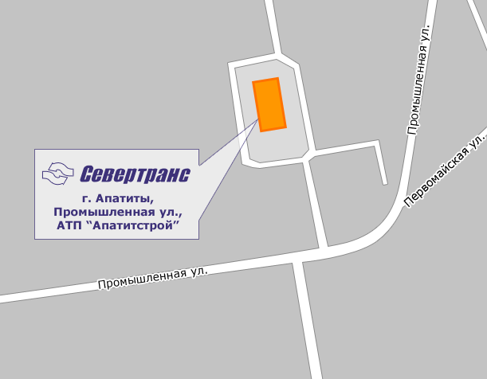Архангельск, Северодвинск, Плесецк
Адрес:
г. Архангельск
Московский пр., д. 10
Режим работы склада:
пн, чт, пт: с 9:00 до 17:00,
без обеда;
ср, сб, вс: по договоренности.
Телефоны:
+7-911-655-08-87 Михаил
Схема проезда:
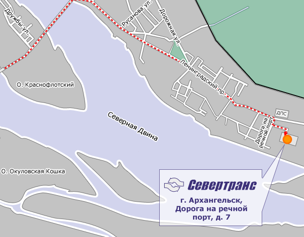Брянск, Смоленск
Доставка посылок только до дверей получателя.
Телефоны:
+7-911-911-16-46,
+7-980-331-61-11,
+7-960-552-75-76 Евгений
Вельск
Адрес:
г. Вельск,
Торговая ул., д. 10
Межрайбаза
Режим работы склада:
пн, чт: с 9:00 до 13:00
без обеда;
вт, пт: склад закрыт,
возможна доставка до дверей (по договоренности);
ср, сб, вс: выходные.
Телефоны:
+7-911-596-10-61
+7-921-079-94-07
Ирина Викторовна
Схема проезда:
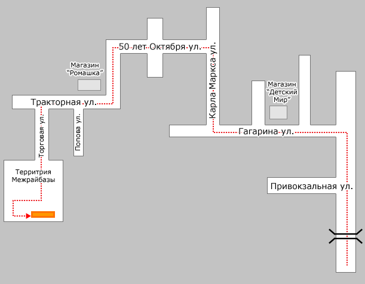Вологда
Адрес:
г. Вологда,
Окружное шоссе, д. 2А
Режим работы склада:
пн, чт: с 9:00 до 17:00;
ср, пт: с 12:00 до 17:00
вт, сб, вс: склад закрыт.
Возможна выдача и доставка груза по договоренности.
Телефоны:
+7-911-500-37-09
+7 (8172) 52-13-43 Анатолий
Схема проезда:
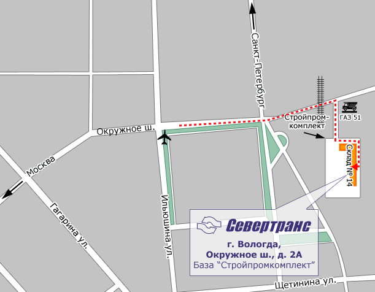Кандалакша
Адрес:
ул. Фрунзе, д. 25, стр. 3
Режим работы склада:
Телефон:
+7-911-304-81-01 Алексей
Схема проезда:
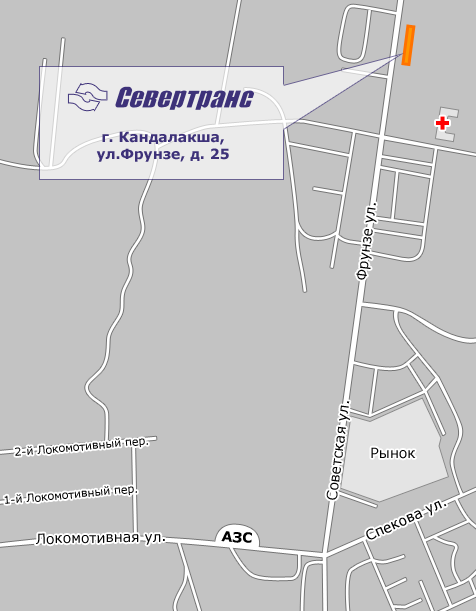Киров
Адрес:
Базовая ул., д. 5
Режим работы склада:
Телефоны:
+7 (8332) 70-40-10, 70-40-12, +7-922-661-26-17
Ольга и Владислав
Схема проезда:
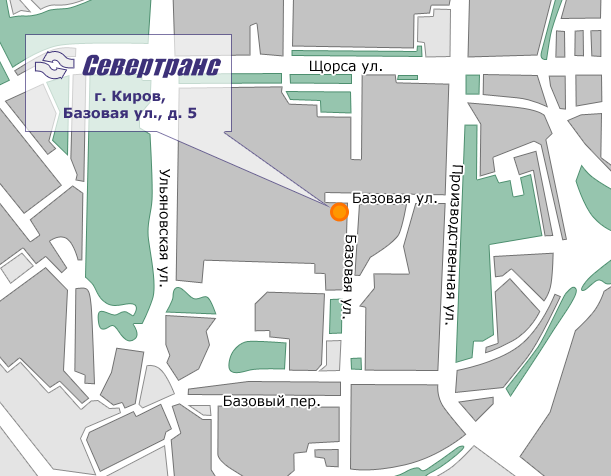Котлас, Коряжма, Великий Устюг
Адрес:
Аэропорт (Здание почты)
Режим работы склада:
Телефон:
+7-911-571-14-93 Сергей
Схема проезда:
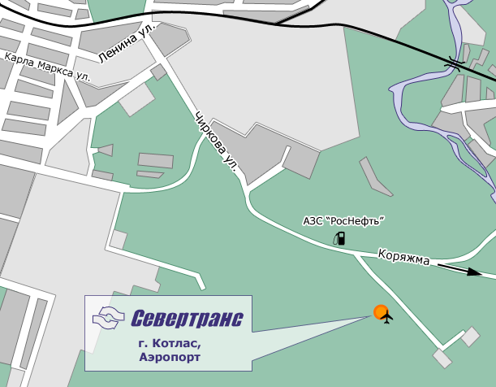Мончегорск
Адрес:
Комсомольская ул., д. 1
Режим работы склада:
Телефон:
+7-911-331-44-60 Алексей
Схема проезда:
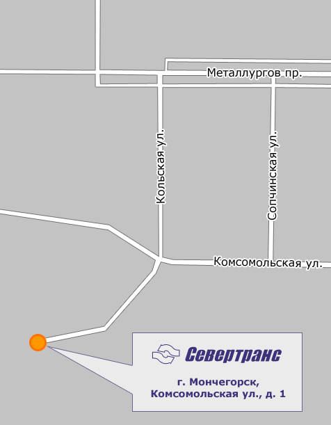Мурманск
Адрес:
ул. Марата, д. 30
Режим работы склада:
Телефоны:
+7-911-300-31-13, +7 (8152) 25-17-26
Евгений
Схема проезда:
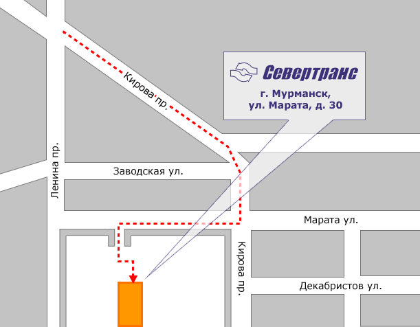Нижний Новгород
Адрес:
Большая Починковская ул., д. 33
Режим работы склада:
Телефоны:
+7-905-011-18-72, +7 (8312) 73-60-20 -факс
Владимир
Схема проезда:
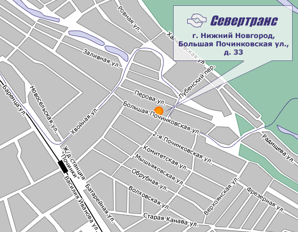Пермь
Адрес:
ул. Рязанская, д. 19
Режим работы склада:
Телефоны:
+7-902-645-99-25 Владимир
Схема проезда:
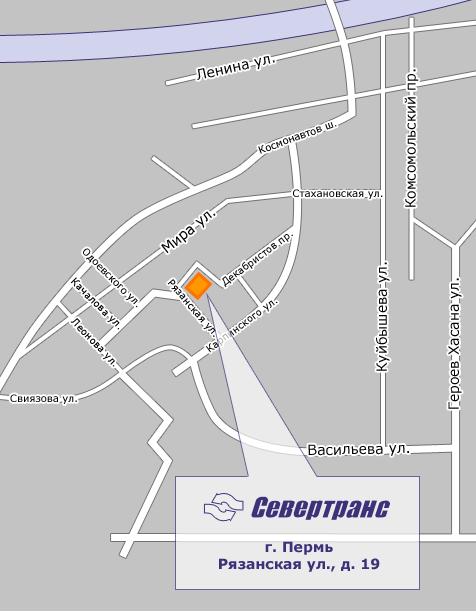Петрозаводск
Адрес:
Новосулажгорская ул, д. 17А
Режим работы склада:
Телефоны:
+7 (8142) 741-541, +7-911-405-02-43
Алексей, Татьяна
Схема проезда:
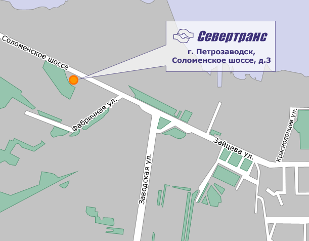Сыктывкар
Адрес:
Лесопарковая ул., д. 30
Режим работы склада:
Телефоны:
+7-912-861-81-41, +7 (8212) 317-622, 315-203
Дмитрий
Схема проезда:
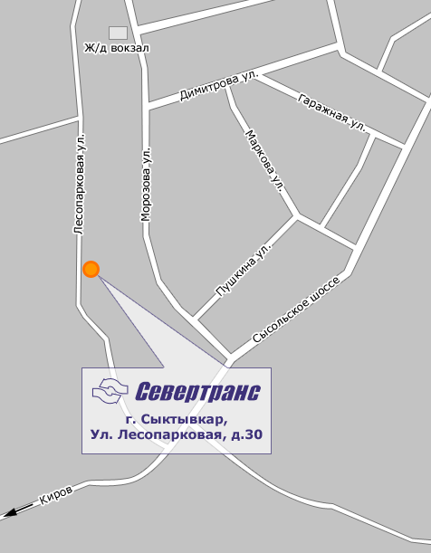Ухта
Адрес:
Западная ул., д. 8
Режим работы склада:
Телефоны:
+7 (82167) 20-927, +7-912-865-00-39
Ольга